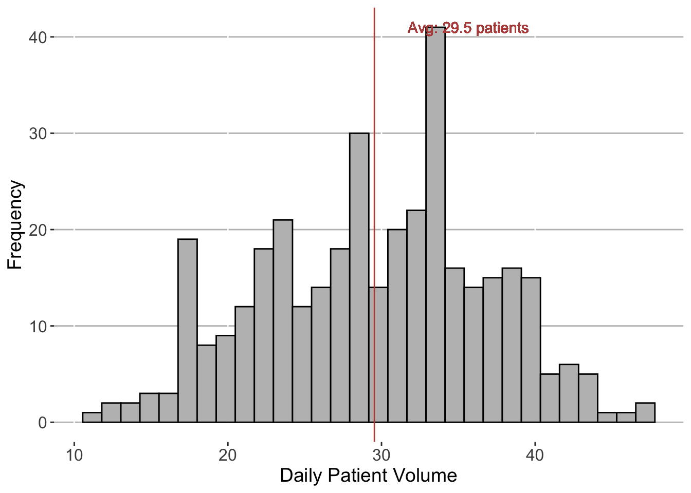

A few years ago I encountered an interesting count distribution during a modeling project. The goal was to model the number of suture anchors used in rotator-cuff tendon tears, and how that was influenced by tear characteristics and surgeon preference. My instinct was to fit a Poisson model, but the target took on relatively small values and was also non-zero, so I had to do some digging for an alternative approach. I came across a method called Conway-Maxwell (COM) Poisson regression, which not only allowed for overdispersion (i.e., the population variance is greater than its mean), but also underdispersion. It hit me that I had never come across methodology for the latter and it seemed to align with my problem, so I was intrigued (Full Disclosure: I heard of COM-Poisson prior to that, albeit knew nothing about it, when one of my super smart graduate school buddies was doing research on it, so that’s also why it stuck).
Long story short, we didn‚Äôt end up using the COM-Poisson model for the anchor project üòÅ, and instead went in favor of Zero-Truncated Poisson regression. Nevertheless I thought it was an awesome method that warranted further exploration and later did a talk on it. That was a few years ago‚Äìso this article is intended to be a reworking of that talk to relearn it for myself, but also to get the word out about this awesome method! All code is written in R.
I really like making up examples, so lets start with that:
Suppose hospital administrators are interested in emergency department (ED) utilization and have asked a few questions:
How many patients can we expect to see in a given day?
What is the likelihood that we see more than 40 patients in a single day?
Do we see more variation during the week versus weekend, or in the AM versus PM hours?
To expedite the process, we’re given a pre-built dataset called ed_volumes containing the number of patients entering the ED each (half) day over the past calendar year.
Code
# Load packagesrequire(tidyverse)
Loading required package: tidyverse
── Attaching core tidyverse packages ──────────────────────── tidyverse 2.0.0 ──
✔ dplyr 1.1.4 ✔ readr 2.1.5
✔ forcats 1.0.0 ✔ stringr 1.5.1
✔ ggplot2 3.5.1 ✔ tibble 3.2.1
✔ lubridate 1.9.3 ✔ tidyr 1.3.1
✔ purrr 1.0.2
── Conflicts ────────────────────────────────────────── tidyverse_conflicts() ──
✖ dplyr::filter() masks stats::filter()
✖ dplyr::lag() masks stats::lag()
ℹ Use the conflicted package (<http://conflicted.r-lib.org/>) to force all conflicts to become errors
Code
# Set a seedset.seed(123)### 1. Create simulated dataset# Generating a random Poisson parametered_true_mean <-runif(n =1,min =12.5,max =25 )# Build the dataseted_volumes <-tibble(Date =rep(as.Date("2021-12-31") -seq(0, 364, 1), 2),TimeOfDay =c(rep("AM", length(Date) /2), rep("PM", length(Date) /2)),Volume =rpois(n =length(Date), lambda =ifelse(weekdays(Date) %in%c("Saturday", "Sunday"), ed_true_mean -5, ed_true_mean) ) ) %>%arrange(desc(Date), TimeOfDay )
Code
# Load some packagesrequire(tidyverse)# Check the datasetprint(ed_volumes, n =5)
# A tibble: 730 × 3
Date TimeOfDay Volume
<date> <chr> <int>
1 2021-12-31 AM 19
2 2021-12-31 PM 12
3 2021-12-30 AM 20
4 2021-12-30 PM 20
5 2021-12-29 AM 9
# ℹ 725 more rows
First, let’s take a look at the distribution of total daily patient volume over the time period:
Code
ed_volumes %>%# For each dategroup_by(Date) %>%# Compute the total summarise(Volume =sum(Volume),.groups ="drop" ) %>%# Make a plotggplot() +geom_histogram(aes(x = Volume ),fill ="gray",color ="black",bins =30 ) +geom_vline(aes(xintercept =mean(Volume) ),color ="#b84f48" ) +geom_text(aes(x =mean(Volume) +1,y =41,label =str_c("Avg: ", round(mean(Volume), 1), " patients") ),color ="#b84f48",hjust =-.15 ) +xlab("Daily Patient Volume") +ylab("Frequency") +theme(legend.position ="none",axis.title =element_text(size =14),axis.text =element_text(size =12),strip.text =element_text(size =12),panel.background =element_blank(),panel.grid.major.y =element_line(color ="gray") )
Warning in geom_text(aes(x = mean(Volume) + 1, y = 41, label = str_c("Avg: ", : All aesthetics have length 1, but the data has 365 rows.
ℹ Please consider using `annotate()` or provide this layer with data containing
a single row.

There were 29.5 patients per day on average, ranging from 11 to 47. Knowing that this is a count distribution, we think to use a Poisson model to provide our estimates for the first two questions. Let’s remind ourselves of the specifics:
The Poisson Distribution
If the probability mass function (PMF) for a non-negative, integer-valued \(Y\) is:
\[P(Y = y|\lambda) = \frac{e^{-\lambda}\lambda^y}{y!}\] then \(Y\) is distributed as a Poisson random variable, and has the following property:
\[E[Y] = \lambda\] It turns out that the maximum likelihood estimator (MLE) for \(\lambda\) is the sample average. Remembering this, we provide the estimate for the first question to be 30 patients. (rounding up)
y <-0:40p <-exp(-lambda_hat) * lambda_hat^y /factorial(y)question2 <-1-sum(p)question2
[1] 0.02633629
Code
# Alternative approach1-ppois(40, lambda_hat)
[1] 0.02633629
We estimate that there is a 2.6% chance that we will see more than 40 patients in the ED in a single day–done with the first two questions!
üò®
Unfortunately, we missed a crucial assumption about the Poisson distribution that we didn’t account for:
\[E[Y] = Var[Y]\] The estimates we provided assumed that the mean and variance of our underlying distribution were equal. The sample variance was 53.4 which is considerably larger than the mean of 29.5. Here is what an actual Poisson distribution looks like with \(\lambda\) = 29.5 (our sample average) in comparison with the observed data:
Code
ed_volumes %>%# Compute the total for each dategroup_by(Date) %>%summarise(Volume =sum(Volume),.groups ="drop" ) %>%# Count the occurrences of each daily volumegroup_by(Volume) %>%summarise(N =n(),.groups ="drop" ) %>%# Compute the observed and theoretical relative frequenciesmutate(Observed = N /sum(N),Theoretical =dpois(Volume, lambda = lambda_hat) ) %>%# Remove raw countselect(-N) %>%# Make a plotggplot(aes(x = Volume ) ) +geom_col(aes(y = Observed,fill ="Observed Data" ),color ="black" ) +geom_area(aes(y = Theoretical,fill ="Actual Poisson" ),alpha = .25,color ="black" ) +geom_vline(aes(xintercept = lambda_hat ),color ="#b84f48" ) +xlab("Daily Patient Volume") +ylab("Relative Frequency (%)") +theme(legend.title =element_blank(),legend.text =element_text(size =12),legend.position ="top",axis.title =element_text(size =14),axis.text =element_text(size =12),strip.text =element_text(size =12),panel.background =element_blank(),panel.grid.major.y =element_line(color ="gray") ) +scale_y_continuous(labels = scales::percent) +scale_fill_manual(values =c("blue", "gray"))
The tails of the observed sample are heavier than a Poisson would be with the same mean. Therefore, the estimates we provided for questions 1 and 2 are probably not very accurate. Let’s take a different approach: answer question 3 first, and then work our way back to the other two.
As a reminder, we want to assess whether there is more variation in patient volume during the week versus weekend, or in the AM versus PM hours. To get this comparison, we need a way to simultaneously estimate the effect of each of these factors on the patient volume: enter Poisson regression.
Model Formulation
Just like other generalized linear models (GLM), a Poisson regression model estimates the population average (the same average as described above!), but conditioned on a set of covariates.
More formally, for a given set of covariates \(x_1, x_2, .., x_p\), we assume the following functional form:
\[log(\lambda_i) = \beta_0 + \beta_1x_{i1} + \beta_2x_{i2}+...+\beta_px_{ip} = X_i\beta\] This log-linear model allows us to estimate the mean number of events (i.e., the Poisson parameter \(\lambda\)) for a given arrangement of covariate values. We also get informative interpretation of the individual effects of each covariate. For our example, the model looks like this:
\[log(\lambda_i) = \beta_0 + \beta_{weekend}x_{i_{weekend}} + \beta_{PM}x_{i_{PM}}\] where \(\lambda_i\) is the expected (half-day) patient volume, \(x_{i_{weekend}} = 1\) if it is Saturday or Sunday, and \(x_{i_{PM}} = 1\) if it is PM hours (and they are 0 otherwise). We can take the following steps to estimate the \(\beta\) parameters:
\[L(\lambda_i) = \prod_{i=1}^N \frac{e^{-e^{X_i\beta}}{(e^{X_i\beta})}^{y_i}}{y_i!} \\\] where \(N\) is the total number of (half) days.
Compute the MLE’s
\[\hat{\beta} = max_{\beta} L(\lambda_i)\\\]\(\hat{\beta}\) is the set of estimated parameter values computed from maximizing the likelihood function. Once we have these, we can plug them into the regression formula, and away we go! Luckily, our software will compute these for us–all we need to do is supply the data.
Code
# Fit a generalized linear modelmodel <-glm(formula = Volume ~ Weekend + PM, # Specify the model formdata =# Supply the data ed_volumes %>%mutate(Weekend =weekdays(Date) %in%c("Saturday", "Sunday"),PM = TimeOfDay =="PM" ),family ="poisson"# Indicate the likelihood )# Show the model summarysummary(model)
Call:
glm(formula = Volume ~ Weekend + PM, family = "poisson", data = ed_volumes %>%
mutate(Weekend = weekdays(Date) %in% c("Saturday", "Sunday"),
PM = TimeOfDay == "PM"))
Coefficients:
Estimate Std. Error z value Pr(>|z|)
(Intercept) 2.78530 0.01455 191.483 <2e-16 ***
WeekendTRUE -0.41433 0.02371 -17.474 <2e-16 ***
PMTRUE 0.01762 0.01926 0.915 0.36
---
Signif. codes: 0 '***' 0.001 '**' 0.01 '*' 0.05 '.' 0.1 ' ' 1
(Dispersion parameter for poisson family taken to be 1)
Null deviance: 1054.15 on 729 degrees of freedom
Residual deviance: 723.55 on 727 degrees of freedom
AIC: 4007.4
Number of Fisher Scoring iterations: 4
The estimated model turns out to be:
\[log(\hat{\lambda_i}) = 2.7853 - 0.4143x_{i_{weekend}} + 0.0176x_{i_{PM}}\] where \(\hat{\lambda_i}\) is the estimated average number of patients showing up to the ED on a given day of the week and time of day. Let’s take a look at the four possible estimated means:
Code
# Make grid of possible values for each inputlist(Weekend =c(TRUE, FALSE),PM =c(TRUE, FALSE)) %>%# Find cross-productcross_df() %>%# Add some columnsmutate(# Add predictionsEstimatedVolume =predict( model, # Supply the modelnewdata =data.frame(Weekend, PM),type ="response"# Applies the inverse link to the linear predictor ),EstimatedVolume =round(EstimatedVolume, 2),# Clean up namesWeekend =case_when( Weekend ~"Sat, Sun",TRUE~"Mon - Fri" ) %>%factor() %>%fct_relevel("Mon - Fri"),PM =case_when( PM ~"PM",TRUE~"AM" ) %>%factor() %>%fct_relevel("AM" ) ) %>%# Rearrangearrange( Weekend, PM ) %>%# Send over the columnspivot_wider(names_from = PM,values_from = EstimatedVolume ) %>%# Rename columnrename(`Day of week`= Weekend ) %>%# Make a kable knitr::kable(format ="html",caption ="Expected ED patient volume" ) %>% kableExtra::kable_styling(full_width =FALSE,bootstrap_options =c("striped", "responsive") ) %>% kableExtra::add_header_above(c("", "Time of day"=2))
Warning: `cross_df()` was deprecated in purrr 1.0.0.
ℹ Please use `tidyr::expand_grid()` instead.
ℹ See <https://github.com/tidyverse/purrr/issues/768>.
Expected ED patient volume
Time of day
Day of week
AM
PM
Mon - Fri
16.20
16.49
Sat, Sun
10.71
10.90
Our model suggests that we see \(1 - e^{\beta_{weekend}} \approx\) 33.9% less patient volume on the weekends compared to during the week, regardless if it is AM or PM hours–this is reflected in our table estimates. We can also see that there is little difference in patient volume by the time of day, regardless of the day of the week.
Answer to Question 3
The evidence tells us that not only is the day of the week the more important factor, but the time of day does not appear to matter at all. This is clear when we stratify our observed sample distribution:
So back to the first two questions. How can we use what we found for question 3 to inform us of these answers? Remember, we need to provide estimates regarding the total daily patient volume even though our model target was half-day patient volume. We have a couple options:
Since we have established that the time of day does not impact patient volume, we could fit a new model by first aggregating the target to reflect the total daily patient volume and then only add the weekday versus weekend factor as a covariate.
Code
# Fit a generalized linear modelmodel2 <-glm(formula = Volume ~ Weekend, # Specify the model formdata = ed_volumes %>%# For each dategroup_by(Date) %>%# Compute the total daily patient volumesummarise(Volume =sum(Volume),.groups ="drop" ) %>%# Make the indicatormutate(Weekend =weekdays(Date) %in%c("Saturday", "Sunday") ),family ="poisson"# Indicate the likelihood )# Show the model summarysummary(model2)
Call:
glm(formula = Volume ~ Weekend, family = "poisson", data = ed_volumes %>%
group_by(Date) %>% summarise(Volume = sum(Volume), .groups = "drop") %>%
mutate(Weekend = weekdays(Date) %in% c("Saturday", "Sunday")))
Coefficients:
Estimate Std. Error z value Pr(>|z|)
(Intercept) 3.48729 0.01082 322.15 <2e-16 ***
WeekendTRUE -0.41433 0.02371 -17.47 <2e-16 ***
---
Signif. codes: 0 '***' 0.001 '**' 0.01 '*' 0.05 '.' 0.1 ' ' 1
(Dispersion parameter for poisson family taken to be 1)
Null deviance: 681.97 on 364 degrees of freedom
Residual deviance: 352.21 on 363 degrees of freedom
AIC: 2252.7
Number of Fisher Scoring iterations: 4
Notice the relative effect of the day of week factor remained consistent from the original model–the intercept just changed to reflect the shifted distribution for the total patient volume. This approach works, but lets use the model we originally developed…
This option requires us to know a property of Poisson random variables. Specifically, if X and Y are two independent Poisson random variables and \(Z = X + Y\), then
\[Z \sim Poisson(\lambda_X + \lambda_Y)\] where \(\lambda_X\) and \(\lambda_Y\) are the expected values (means) for X and Y, respectively. This is relevant to us because we need to aggregate our model estimates over the time of day in order to get estimates for the total daily volume. Specifically, if \(V\) is the patient volume, then \(V_{Daily} = V_{AM} + V_{PM}\) for a particular day of the week. We assume from our model specification above that \(V_{AM}\) and \(V_{PM}\) follow independent Poisson distributions. Thus, we get the following:
\[
\begin{equation}
\begin{split}
\lambda_{Daily} & = E[V_{Daily}] \\
& = E[V_{AM} + V_{PM}] \\
& = E[V_{AM}] + E[V_{PM}] \\
& = \lambda_{AM} + \lambda_{PM} \\
& = e^{\beta_0 + \beta_{weekend}x_{i_{weekend}}} + e^{\beta_0 + \beta_{weekend}x_{i_{weekend}} + \beta_{PM}} \\
& = e^{\beta_0 + \beta_{weekend}x_{i_{weekend}}} (1 + e^{\beta_{PM}})\\
& =
\begin{cases}
e^{\beta_0} (1 + e^{\beta_{PM}}) & \text{if M-F} \\
e^{\beta_0 + \beta_{weekend}} (1 + e^{\beta_{PM}}) & \text{if Sat, Sun} \\
\end{cases} \\
& \approx
\begin{cases}
32.70 & \text{if M-F} \\
21.61 & \text{if Sat, Sun} \\
\end{cases}
\end{split}
\end{equation}
\] Simply put, to get estimates around the total daily volume, we summed the regression equation over the time of day variable. Note that this is exactly what we would have gotten by just taking the sample mean of total daily volume stratified by each day of week grouping:
Code
stratified_means <- ed_volumes %>%# For each dategroup_by(Date) %>%# Compute the total daily patient volumesummarise(Volume =sum(Volume),.groups ="drop" ) %>%# Make the indicatormutate(Weekend =case_when(weekdays(Date) %in%c("Saturday", "Sunday") ~"Sat, Sun",TRUE~"Mon - Fri" ) %>%factor() %>%fct_relevel("Mon - Fri") ) %>%# For each groupgroup_by(Weekend) %>%# Compute the meansummarise(Mean =mean(Volume),Variance =var(Volume),.groups ="drop" )stratified_means %>%# Make a kable knitr::kable(format ="html",caption ="Stratified Daily Sample Means and Variances" ) %>% kableExtra::kable_styling(full_width =FALSE,bootstrap_options =c("striped", "responsive") )
Stratified Daily Sample Means and Variances
Weekend
Mean
Variance
Mon - Fri
32.69732
31.93495
Sat, Sun
21.60577
19.40618
Notice also that the stratified sample variances align much more with our assumptions in using a Poisson distribution–this was one of our problems earlier, but it appears to be resolved! Now that we have weekday and weekend-specific Poisson distributions, we can confidently compute our final estimates for questions 1 and 2 the same way we did above.
Table 2 already shows the answer to question 1: we can expect to see 33 patients per day Monday-Friday, and 22 patients on Saturdays or Sundays. To get the updated estimates for question 2, we just need to plug in the new means to the PDF and compute the cumulative probability:
Code
question2_updated <- stratified_means %>%# For each set, compute the cumulative probability cheese::stratiply(by = Weekend,f =~1-sum(exp(-.x$Mean) * .x$Mean^c(0:40) /factorial(c(0:40))) )question2_updated
We estimate that there is a 8.96% chance that we will see more than 40 patients on any given Monday-Friday, and a 0.01% chance that we will see that many patients on the weekend.
Okay we got a little carried away with that but hopefully you have an idea of how Poisson regression works.
Conway-Maxwell (COM) Poisson Regression
Now that we have a foundation for standard Poisson regression, we can dig into COM-Poisson! We will use the COMPoissonReg package in R, which can be installed from CRAN with install.packages("COMPoissonReg").
Code
# Load the packagerequire(COMPoissonReg)
Loading required package: COMPoissonReg
Loading required package: Rcpp
Loading required package: numDeriv
The COM-Poisson Distribution
If the PMF for a non-negative, integer-valued \(Y\) is:
\[P(Y = y|\lambda, \nu) = \frac{\lambda^y}{y!^{\nu}Z(\lambda, \nu)}\] where \(\lambda, \nu > 0\), and
\[Z(\lambda, \nu) = \sum_{k=0}^{\infty}\frac{\lambda^k}{k!^{\nu}}\] then \(Y\) is distributed as a COM-Poisson random variable.
That’s kind of a mouthful, but we can see some similarities in its form to the Poisson PDF. In fact, if you’re really math-savvy (which I’m not, I had to look this up), you’ll notice that the function \(Z\) is a power series. When we set \(\nu = 1\), then
\[Z(\lambda, \nu = 1) = \sum_{k=0}^{\infty}\frac{\lambda^k}{k!} = e^\lambda\] Plugging that result back into the full PMF, it turns out to be exactly the same as a Poisson distribution. This tells us that the Poisson distribution is a special case of the COM-Poisson. In the other words, the COM-Poisson is a generalization of the Poisson distribution, so we’ll expect it do everything that the latter can–plus more.
Dispersion Parameter
An important feature of the COM-Poisson PDF is the parameter \(\nu\), which determines its dispersion (i.e., how variable it is relative to its mean). In the standard Poisson distribution, the mean and variance are always the same, by definition. The \(\nu\) parameter allows us to relax that restriction in cases where it does not apply (or we don’t want to force it to). The following table describes the properties when it is above, below, and equal to 1:
Parameter
Implies
Described As
\(\nu=1\)
\(E[Y] = Var[Y]\)
Equidispersed
\(\nu<1\)
\(E[Y] < Var[Y]\)
Overdispersed
\(\nu>1\)
\(E[Y] > Var[Y]\)
Underdispersed
Mean and Variance
Unfortunately, there is no closed form solution for the mean and variance of a COM-Poisson random variable. However, there are a couple related properties that are worth relaying:
The \(\lambda\) parameter is the mean of the power-transformed counts
\[E[Y^\nu] = \lambda\]
The mean and variance can be approximated as:
\[E[Y] \approx \lambda^{1/\nu} - \frac{\nu-1}{2\nu}\]\[Var[Y] \approx \frac{\lambda^{1/\nu}}{\nu}\] when \(\nu \leq 1\) (overdispersed) or \(\lambda > 10^\nu\) (larger counts).
Centrality Simulation
The properties described above give us some useful information, but it is hard to make sense of how these parameters directly govern the data we might observe from a COM-Poisson distribution. To give us a bit more insight, lets randomly generate a bunch of data for different parameter combinations and see what we find. To do this, we’ll use the rcmp function.
Code
# Make a parameter gridparams <-list(lambda =c(1, 3, 5, 10, 25, 50),nu =c(.5, 1, 1.25, 1.5) ) %>%cross_df()# Number of samplesn <-500# Number of simulationss <-100# Set a seedset.seed(123)compoisson_sim1 <- params %>%# Split into a listsplit(1:nrow(.)) %>%# For each elementmap_df(function(.x) {1:s %>%# For each iterationmap_df(function(.sim) {# Time the sampling temp_time <-system.time(temp_value <-rcmp(n = n, lambda = .x$lambda, nu = .x$nu))tibble(s = .sim,lambda = .x$lambda,nu = .x$nu,value = temp_value,time = temp_time["elapsed"][[1]] ) } ) } )
We took 100 random samples of size 500 from 24 parameter combinations. This process took about 94.1 seconds to run. Lets first take a quick look at the distributions from the first simulation for each parameter set.
Code
compoisson_sim1 %>%# Filter to the first simulated valuefilter( s ==1 ) %>%# Convert to factorsmutate(across(c( lambda, nu ), factor ),lambda = lambda %>%fct_relabel(function(x) paste0("lambda == ", x) ) ) %>%# Make a plotggplot() +geom_histogram(aes(x = value,fill = nu ),position ="identity",alpha =0.5 ) +facet_wrap(~lambda,scales ="free",label ="label_parsed" ) +xlab("Observed Value") +ylab("Frequency") +theme(legend.position ="top",legend.title =element_text(size =12),legend.text =element_text(size =12),axis.title =element_text(size =14),axis.text =element_text(size =12),strip.text =element_text(size =12),panel.background =element_blank(),panel.grid.major.y =element_line(color ="gray") ) +labs(fill =expression(nu) )
`stat_bin()` using `bins = 30`. Pick better value with `binwidth`.
It looks like the magnitude of counts increases with \(\lambda\), and decreases with \(\nu\). To get a more concrete view of this, lets compute the sample mean and variance for each iteration, and then average those over the simulations for each parameter combination. By doing this, we’ll also get a sense of the sampling variability of these statistics when \(n=\) 500.
Code
compoisson_sim1 %>%# For each groupgroup_by(lambda, nu, s) %>%# Compute the statisticssummarise(Mean =mean(value),Variance =var(value),.groups ="drop" ) %>%# Send the statistics down the rowspivot_longer(cols =c(Mean, Variance) ) %>%# For each groupgroup_by(lambda, nu, name) %>%# Compute the mean/standard errorsummarise(Mean =mean(value),SE =sd(value),.groups ="drop" ) %>%# Join to get the average time for each iterationinner_join(y = compoisson_sim1 %>%# Remove the value, get unique rowsselect(-value) %>%distinct() %>%# For each groupgroup_by(lambda, nu) %>%# Compute the average time per iterationsummarise(time =mean(time),.groups ="drop" ),by =c("lambda","nu" ) ) %>%# Convert to factorsmutate(nu = nu %>%factor() %>%fct_relabel(function(x) paste0("nu == ", x) ) ) %>%# Make a plotggplot(aes(x = lambda,y = Mean ) ) +geom_line(aes(color = name ),size =1.25 ) +geom_point(aes(color = name ),size =3 ) +geom_ribbon(aes(ymin = Mean -2*SE,ymax = Mean +2*SE,fill = name ),alpha = .25 ) +facet_wrap(~nu,scales ="free_y",label ="label_parsed" ) +ylab("Value") +theme(legend.position ="top",legend.title =element_blank(),legend.text =element_text(size =12),axis.title =element_text(size =14),axis.text =element_text(size =12),strip.text =element_text(size =12),panel.background =element_blank(),panel.grid.major.y =element_line(color ="gray") ) +scale_x_continuous(breaks =unique(params$lambda) ) +labs(x =expression(lambda) )
Warning: Using `size` aesthetic for lines was deprecated in ggplot2 3.4.0.
ℹ Please use `linewidth` instead.
When \(\nu=0.5\) (overdispersed), the counts become large quickly with an increasing \(\lambda\). As the data becomes more underdispersed (\(\nu > 1\)), the variance increases at a slower rate as \(\lambda\) increases, relative to the mean.
So how does this translate to a regression model?
The Regression Model
It turns out that the model structure for COM-Poisson regression is very similar to the standard Poisson model. In fact, we can just copy and paste it from above:
\[log(\lambda_i) = \beta_0 + \beta_1x_{i1} + \beta_2x_{i2}+...+\beta_px_{ip} = X_i\beta\] The basic structure models the \(\lambda\) parameter (on the log scale) as a linear combination of covariates. In turn, the steps for estimating the parameters are also the same:
Plug the regression formula into the COM-Poisson PDF
Derive the likelihood function
Compute the maximum likelihood estimates (MLEs)
The only difference is that the \(\lambda\) parameter in this model no longer represents the mean. So when we generate fitted values or interpret parameter estimates, there has to be a little more care taken as to what those represent.
Let’s take a quick look at how to fit a model with the glm.cmp function and orient ourselves with its output. We’ll use the ed_volumes dataset from the previous section.
Code
compoisson_model1 <-# Function to fit a COM-Poisson modelglm.cmp(formula.lambda = Volume ~ Weekend + PM, # lamda parameter linear predictordata = ed_volumes %>%mutate(Weekend =weekdays(Date) %in%c("Saturday", "Sunday"),PM = TimeOfDay =="PM" ) )compoisson_model1
We see some familiar results. Namely, the parameter estimates and p-values are pretty similar to the standard Poisson model above. However, there is additional output–this is where the dispersion comes in. When we fit the model, the function also estimated the value of the \(\nu\) parameter, which in this case was 1.022 (it was expected to be near 1, given that our data was generated from a standard Poisson distribution). The X components make up the regression equation for \(\lambda\), and the S components make up the regression equation for \(\nu\). We just need to evaluate those equations on an observation’s covariate values, and we’ll have its estimated conditional COM-Poisson distribution.
Testing for Violations of Equidispersion
We could just look at the estimated \(\nu\) parameter and its standard error in the model output to draw a conclusion about the dispersion. Nevertheless, the package also provides a function called equitest to more formally carry out a likelihood ratio test (LRT) for the following hypotheses:
\[H_0: \nu = 1 \hskip.25in H_A: \nu \neq 1\]
It tests for evidence that the data is not equidispersed, but does not specify its direction. Therefore, if \(H_0\) is rejected, it is up to us to garner from the model output whether there is over or under dispersion. Here is the output when performing this test on our model:
As expected, the p-value of 0.6879 does not indicate that over or under dispersion was detected.
Stratified Dispersion
One of the coolest features of this modeling framework (in my opinion) is that not only can you fit a model for over or under dispersed data, but you can allow the dispersion parameter to vary by covariate values. You probably noticed the formula.lambda argument in the glm.cmp function call where we specified the model form for the \(\lambda\) parameter. There is an additional argument called formula.nu where we can analogously specify a linear predictor for the \(\nu\) parameter, which, like \(\lambda\), is on the log scale. This means that, for example, if we suspect that one group has overdispersed data, and another has underdispersed data, we can account for that within a single model. Very cool! Just for kicks, let’s see what this looks like when we allow the \(\nu\) parameter to vary between AM and PM hours from our ed_volumes dataset:
Code
compoisson_model2 <-glm.cmp(formula.lambda = Volume ~ Weekend, # Linear predictor for log-lambdaformula.nu = Volume ~ PM, # Linear predictor for log-nudata = ed_volumes %>%mutate(Weekend =weekdays(Date) %in%c("Saturday", "Sunday"),PM = TimeOfDay =="PM" ) )compoisson_model2
We can see that there are now two parameters associated with the S component of the model. We can simply evaluate and exponentiate those terms to get the \(\nu\) estimates for each group:
Code
# Make a simple design matrixnu_design <-matrix(c(1,1,0,1), nrow =2)# Multiply by the S component of the modelnu_log_estimates <- nu_design %*%as.matrix(compoisson_model2$gamma)# Exponentiatenu_estimates <-exp(nu_log_estimates)# Add the namesrownames(nu_estimates) <-names(compoisson_model2$gamma)nu_estimates
[,1]
S:(Intercept) 1.025285
S:PMTRUE 1.018696
Again, both groups’ data were knowingly generated from a standard Poisson distribution here, so we expected the conditional estimates to be near 1 as well. Nevertheless, it illustrates the power and flexibility of this framework.
Generating Fitted Values
As previously mentioned, there is no closed form solution for the mean of a COM-Poisson random variable. So when we generate fitted values from the model’s linear predictor, it is hard to conceptualize what they represent (it is NOT the mean). Since our model does produce estimates for both \(\lambda\) and \(\nu\), the recommendation is to plug these into the inverse cumulative density function (CDF) to obtain quantile-based fitted values. Specifically, we can use the median. The figure below displays the median and \(25^{th}\)/\(75^{th}\) percentiles from the parameter grid used in the simulation above.
Warning: Using `by = character()` to perform a cross join was deprecated in dplyr 1.1.0.
ℹ Please use `cross_join()` instead.
The median values seem to have a relatively similar behavior to the simulated means.
So, to obtain predicted values with our model object (we’ll use the first model we made), we have to:
Produce observation-level estimates of \(\lambda\) and \(\nu\) with the regression equation
Code
# Multiply the design matrices by the parameter estimates for each linear predictor, then exponentiatelambda_hat <-exp(compoisson_model1$X %*%as.matrix(compoisson_model1$beta))nu_hat <-exp(compoisson_model1$S %*%as.matrix(compoisson_model1$gamma))head(data.frame(lambda_hat, nu_hat))
Plug the estimates into the inverse CDF at the 50th percentile
Code
y_hat <-qcmp(rep(0.5, length(lambda_hat)), lambda = lambda_hat, nu = nu_hat)table(y_hat)
y_hat
11 16
208 522
There does exist a predict.cmp function that uses the mean approximation by default, so this could be used for fitted values as well if those conditions are satisfied.
Simulation: Power of Equidispersion Test
So how well does the likelihood ratio test described above detect over or under dispersion in the data-generating process? We can use simulation! To keep it simple, we will base it off of intercept-only regression models (i.e., no covariates), in effect assessing power at varying values of \(\lambda\). Presumably, power may depend on the complexity of the model, so coverage might vary as terms are added. Here are the parameter values we will consider:
With those, we will take the following steps to carry out the simulation for each combination of \(\lambda\), \(\nu\), and \(N\):
Generate \(N\) random COM-Poisson realizations
Fit an intercept-only COM-Poisson regression model
Conduct the likelihood ratio test for equidispersion
Calculate the p-value from (3)
Repeat steps 1-4 for 100 iterations
Compute the proportion of iterations in (5) where the p-value was less than 0.05
The following code chunk carries out these steps:
Code
# NOTE: THIS CHUNK TAKES A WHILE TO RUN# Number of iterationssims <-100power_results <-# Parameter setlist(lambda =c(1, 3, 5, 10, 25),nu =c(0.5, 0.75, 1, 1.25, 1.5, 2),N =c(25, 50, 100, 500) ) %>%# Get the cross productcross_df() %>%# Split into a listsplit(1:nrow(.)) %>%# For each parameter combinationmap_df(function(x) {# Generate all CMP realizationstibble(S =rep(1:sims, x$N),Y =rcmp(n = x$N * sims, lambda = x$lambda, nu = x$nu) ) %>%# For each iterationgroup_by(S) %>%# Compute the p-valuesummarise(PValue =tryCatch(equitest(glm.cmp(Y ~1))$pvalue,error =function(e) NA_real_ ),.groups ="drop" ) %>%# Add the parameter valuesmutate(lambda = x$lambda,nu = x$nu,N = x$N ) } )
This code took quite a while to run (~4 hours). I’ve noticed the fitting procedure takes a bit longer than we’d be used to with a simple glm call (which is probably expected given the complexity of the estimation), and varies depending on the combination of parameter values. It’s also worth noting that it failed to converge on 0.9% of simulations, which tended to only occur when there was overdispersion (\(\nu=0.5\)) with large counts (\(\lambda > 5\)). Nevertheless, the figure below gives us the results of the simulation showing the estimated power for each parameter combination:
Code
power_results %>%# For each groupgroup_by(lambda, nu, N) %>%# Compute the power, and a measure of simulation errorsummarise(Power =mean(PValue <=0.05, na.rm =TRUE),SE =sd(PValue <=0.05, na.rm =TRUE) /sqrt(n()),.groups ="drop" ) %>%# Make a factormutate(N =factor(N),nu = nu %>%factor() %>%fct_relabel(function(x) paste0("nu == ", x) ) ) %>%# Make a plotggplot(aes(x = lambda,y = Power ) ) +geom_line(aes(color = N ),size =1 ) +geom_point(aes(color = N ),size =3 ) +geom_ribbon(aes(ymin = Power -2*SE,ymax = Power +2*SE,fill = N ),alpha = .35 ) +facet_wrap(~nu,label ="label_parsed" ) +ylab("Power") +theme(legend.position ="top",axis.title =element_text(size =14),axis.text =element_text(size =12),strip.text =element_text(size =12),panel.background =element_blank(),panel.grid.major.y =element_line(color ="gray") ) +scale_x_continuous(breaks =unique(power_results$lambda) ) +labs(x =expression(lambda) )
Findings:
The power increases with sample size and deviation from \(\nu=1\)
The test has a much harder time detecting over/under dispersion when the counts are really small (i.e., \(\lambda = 1\))
When there is overdispersion (\(\nu<1\)), the power looks higher at lower values of \(\lambda\), but the opposite occurs as the data becomes more underdispersed
Conclusion
The COM-Poisson regression framework is another tool in the toolbox to consider when modeling count data. Given that it is a generalization of the standard Poisson model that handles both over and under dispersed data, a good strategy may be to use it as a starting point to explore the variability in a dataset, and then shape the model from there. The likelihood ratio test allows us to test for violations of equidispersion, at which point we can use estimation to identify the direction that the dispersion exists. Since there are popular methods to handle overdispersed data (e.g., negative binomial models), the real void this method fills is its handling of underdispersed data–the challenge there may simply be finding the use case.
Source Code
---title: "Exploring COM Poisson regression"description: "A method for underdispersed count data"author: "Alex Zajichek"date: "12/28/2021"image: "feature.png"categories: - Regressionformat: html: code-fold: true code-tools: true---A few years ago I encountered an interesting count distribution during a modeling project. The goal was to model the number of [suture anchors](https://www.shoulderdoc.co.uk/article/538) used in rotator-cuff tendon tears, and how that was influenced by tear characteristics and surgeon preference. My instinct was to fit a [Poisson](https://en.wikipedia.org/wiki/Poisson_distribution) model, but the target took on relatively small values and was also non-zero, so I had to do some digging for an alternative approach. I came across a method called Conway-Maxwell (COM) Poisson regression, which not only allowed for _overdispersion_ (i.e., the population variance is greater than its mean), but also _underdispersion_. It hit me that I had never come across methodology for the latter and it seemed to align with my problem, so I was intrigued (Full Disclosure: I heard of COM-Poisson prior to that, albeit knew nothing about it, when one of my super smart graduate school buddies was doing research on it, so that's also why it stuck). Long story short, we didn't end up using the COM-Poisson model for the [anchor project](https://www.jshoulderelbow.org/article/S1058-2746(18)30555-X/fulltext) `r emo::ji("grin")`, and instead went in favor of [Zero-Truncated Poisson regression](https://stats.oarc.ucla.edu/r/dae/zero-truncated-poisson/). Nevertheless I thought it was an awesome method that warranted further exploration and later did a [talk](NonTraditionalCountRegression.pdf) on it. That was a few years ago--so this article is intended to be a reworking of that talk to relearn it for myself, but also to get the word out about this awesome method! All code is written in R.# Table Of Contents* [A Review of Poisson Regression](#reviewofpoisson) + [The Poisson Distribution](#poissondistribution) + [Model Formulation](#modelformulation)* [Conway-Maxwell (COM) Poisson Regression](#compoisson) + [The COM-Poisson Distribution](#compoissondistribution) + [The Regression Model](#compoissonregressionmodel) + [Testing for Violations of Equidispersion](#compoissonlrt) + [Stratified Dispersion](#stratifieddispersion) + [Generating Fitted Values](#comfittedvalues) + [Simulation: Power of Equidispersion Test](#compowersim)* [Conclusion](#conclusion)* [Code Appendix](#codeappendix)# A Review of Poisson Regression {#reviewofpoisson}I really like making up examples, so lets start with that:Suppose hospital administrators are interested in emergency department (ED) utilization and have asked a few questions:1. How many patients can we expect to see in a given day?2. What is the likelihood that we see more than 40 patients in a single day?3. Do we see more variation during the week versus weekend, or in the AM versus PM hours?To expedite the process, we're given a pre-built dataset called `ed_volumes` containing the number of patients entering the ED each (half) day over the past calendar year.```{r}# Load packagesrequire(tidyverse)# Set a seedset.seed(123)### 1. Create simulated dataset# Generating a random Poisson parametered_true_mean <-runif(n =1,min =12.5,max =25 )# Build the dataseted_volumes <-tibble(Date =rep(as.Date("2021-12-31") -seq(0, 364, 1), 2),TimeOfDay =c(rep("AM", length(Date) /2), rep("PM", length(Date) /2)),Volume =rpois(n =length(Date), lambda =ifelse(weekdays(Date) %in%c("Saturday", "Sunday"), ed_true_mean -5, ed_true_mean) ) ) %>%arrange(desc(Date), TimeOfDay )``````{r}# Load some packagesrequire(tidyverse)# Check the datasetprint(ed_volumes, n =5)```First, let's take a look at the distribution of total daily patient volume over the time period:```{r}ed_volumes %>%# For each dategroup_by(Date) %>%# Compute the total summarise(Volume =sum(Volume),.groups ="drop" ) %>%# Make a plotggplot() +geom_histogram(aes(x = Volume ),fill ="gray",color ="black",bins =30 ) +geom_vline(aes(xintercept =mean(Volume) ),color ="#b84f48" ) +geom_text(aes(x =mean(Volume) +1,y =41,label =str_c("Avg: ", round(mean(Volume), 1), " patients") ),color ="#b84f48",hjust =-.15 ) +xlab("Daily Patient Volume") +ylab("Frequency") +theme(legend.position ="none",axis.title =element_text(size =14),axis.text =element_text(size =12),strip.text =element_text(size =12),panel.background =element_blank(),panel.grid.major.y =element_line(color ="gray") )```There were `r round(mean(with(ed_volumes, tapply(Volume, Date, sum))), 1)` patients per day on average, ranging from `r min(range(with(ed_volumes, tapply(Volume, Date, sum))))` to `r max(range(with(ed_volumes, tapply(Volume, Date, sum))))`. Knowing that this is a count distribution, we think to use a Poisson model to provide our estimates for the first two questions. Let's remind ourselves of the specifics:## The Poisson Distribution {#poissondistribution}If the probability mass function (PMF) for a non-negative, integer-valued $Y$ is:$$P(Y = y|\lambda) = \frac{e^{-\lambda}\lambda^y}{y!}$$then $Y$ is distributed as a Poisson random variable, and has the following property:$$E[Y] = \lambda$$It turns out that the maximum likelihood estimator (MLE) for $\lambda$ is the [sample average](https://www.statlect.com/fundamentals-of-statistics/Poisson-distribution-maximum-likelihood). Remembering this, _we provide the estimate for the first question to be `r ceiling(mean(with(ed_volumes, tapply(Volume, Date, sum))))` patients. (rounding up)_```{r}lambda_hat <-mean(with(ed_volumes, tapply(Volume, Date, sum)))lambda_hat```We also know that once we have an estimate for $\lambda$ that we can compute probabilities by plugging it into the PMF:$$P(Y>40) = 1 - P(Y\leq40) = 1 - \sum_{y=0}^{40} \frac{e^{-\lambda}\lambda^y}{y!}$$```{r}y <-0:40p <-exp(-lambda_hat) * lambda_hat^y /factorial(y)question2 <-1-sum(p)question2# Alternative approach1-ppois(40, lambda_hat)```_We estimate that there is a `r round(question2*100,1)`% chance that we will see more than 40 patients in the ED in a single day_--done with the first two questions! `r emo::ji("scared")`Unfortunately, we missed a crucial assumption about the Poisson distribution that we didn't account for:$$E[Y] = Var[Y]$$The estimates we provided assumed that the mean and variance of our underlying distribution were equal. The sample variance was `r round(var(with(ed_volumes, tapply(Volume, Date, sum))), 1)` which is considerably larger than the mean of `r round(mean(with(ed_volumes, tapply(Volume, Date, sum))), 1)`. Here is what an actual Poisson distribution looks like with $\lambda$ = `r round(mean(with(ed_volumes, tapply(Volume, Date, sum))), 1)` (our sample average) in comparison with the observed data:```{r}ed_volumes %>%# Compute the total for each dategroup_by(Date) %>%summarise(Volume =sum(Volume),.groups ="drop" ) %>%# Count the occurrences of each daily volumegroup_by(Volume) %>%summarise(N =n(),.groups ="drop" ) %>%# Compute the observed and theoretical relative frequenciesmutate(Observed = N /sum(N),Theoretical =dpois(Volume, lambda = lambda_hat) ) %>%# Remove raw countselect(-N) %>%# Make a plotggplot(aes(x = Volume ) ) +geom_col(aes(y = Observed,fill ="Observed Data" ),color ="black" ) +geom_area(aes(y = Theoretical,fill ="Actual Poisson" ),alpha = .25,color ="black" ) +geom_vline(aes(xintercept = lambda_hat ),color ="#b84f48" ) +xlab("Daily Patient Volume") +ylab("Relative Frequency (%)") +theme(legend.title =element_blank(),legend.text =element_text(size =12),legend.position ="top",axis.title =element_text(size =14),axis.text =element_text(size =12),strip.text =element_text(size =12),panel.background =element_blank(),panel.grid.major.y =element_line(color ="gray") ) +scale_y_continuous(labels = scales::percent) +scale_fill_manual(values =c("blue", "gray"))```The tails of the observed sample are heavier than a Poisson would be with the same mean. Therefore, the estimates we provided for questions 1 and 2 are probably not very accurate. Let's take a different approach: _answer question 3 first, and then work our way back to the other two._ As a reminder, we want to assess whether there is more variation in patient volume during the week versus weekend, or in the AM versus PM hours. To get this comparison, we need a way to simultaneously estimate the effect of each of these factors on the patient volume: enter Poisson regression. ## Model Formulation {#modelformulation}Just like other [generalized linear models](https://en.wikipedia.org/wiki/Generalized_linear_model) (GLM), a Poisson regression model estimates the population average (the same average as described above!), _but conditioned on a set of covariates_. More formally, for a given set of covariates $x_1, x_2, .., x_p$, we assume the following functional form:$$log(\lambda_i) = \beta_0 + \beta_1x_{i1} + \beta_2x_{i2}+...+\beta_px_{ip} = X_i\beta$$This _log-linear_ model allows us to estimate the mean number of events (i.e., the Poisson parameter $\lambda$) for a given arrangement of covariate values. We also get informative interpretation of the individual effects of each covariate. For our example, the model looks like this:$$log(\lambda_i) = \beta_0 + \beta_{weekend}x_{i_{weekend}} + \beta_{PM}x_{i_{PM}}$$where $\lambda_i$ is the expected (half-day) patient volume, $x_{i_{weekend}} = 1$ if it is Saturday or Sunday, and $x_{i_{PM}} = 1$ if it is PM hours (and they are 0 otherwise). We can take the following steps to estimate the $\beta$ parameters:1. Plug the regression formula into the Poisson PMF$$\begin{equation} \begin{split}P(Y_i = y_i|\lambda_i) & = \frac{e^{-\lambda_i}\lambda_i^{y_i}}{y_i!} \\& = \frac{e^{-e^{X_i\beta}}{(e^{X_i\beta})}^{y_i}}{y_i!} \\\end{split}\end{equation}$$2. Derive the likelihood function$$L(\lambda_i) = \prod_{i=1}^N \frac{e^{-e^{X_i\beta}}{(e^{X_i\beta})}^{y_i}}{y_i!} \\$$where $N$ is the total number of (half) days.3. Compute the MLE's$$\hat{\beta} = max_{\beta} L(\lambda_i)\\$$$\hat{\beta}$ is the set of estimated parameter values computed from maximizing the likelihood function. Once we have these, we can plug them into the regression formula, and away we go! Luckily, our software will compute these for us--all we need to do is supply the data.```{r}# Fit a generalized linear modelmodel <-glm(formula = Volume ~ Weekend + PM, # Specify the model formdata =# Supply the data ed_volumes %>%mutate(Weekend =weekdays(Date) %in%c("Saturday", "Sunday"),PM = TimeOfDay =="PM" ),family ="poisson"# Indicate the likelihood )# Show the model summarysummary(model)```The estimated model turns out to be:$$log(\hat{\lambda_i}) = 2.7853 - 0.4143x_{i_{weekend}} + 0.0176x_{i_{PM}}$$where $\hat{\lambda_i}$ is the _estimated_ average number of patients showing up to the ED on a given day of the week and time of day. Let's take a look at the four possible estimated means:```{r}# Make grid of possible values for each inputlist(Weekend =c(TRUE, FALSE),PM =c(TRUE, FALSE)) %>%# Find cross-productcross_df() %>%# Add some columnsmutate(# Add predictionsEstimatedVolume =predict( model, # Supply the modelnewdata =data.frame(Weekend, PM),type ="response"# Applies the inverse link to the linear predictor ),EstimatedVolume =round(EstimatedVolume, 2),# Clean up namesWeekend =case_when( Weekend ~"Sat, Sun",TRUE~"Mon - Fri" ) %>%factor() %>%fct_relevel("Mon - Fri"),PM =case_when( PM ~"PM",TRUE~"AM" ) %>%factor() %>%fct_relevel("AM" ) ) %>%# Rearrangearrange( Weekend, PM ) %>%# Send over the columnspivot_wider(names_from = PM,values_from = EstimatedVolume ) %>%# Rename columnrename(`Day of week`= Weekend ) %>%# Make a kable knitr::kable(format ="html",caption ="Expected ED patient volume" ) %>% kableExtra::kable_styling(full_width =FALSE,bootstrap_options =c("striped", "responsive") ) %>% kableExtra::add_header_above(c("", "Time of day"=2))```Our model suggests that we see $1 - e^{\beta_{weekend}} \approx$ `r paste0(round((1 - exp(coefficients(model)[["WeekendTRUE"]])) * 100, 1), "%")` _less_ patient volume on the weekends compared to during the week, regardless if it is AM or PM hours--this is reflected in our table estimates. We can also see that there is little difference in patient volume by the time of day, regardless of the day of the week. __*Answer to Question 3*__The evidence tells us that not only is the day of the week the _more important_ factor, but the time of day does not appear to matter at all. This is clear when we stratify our observed sample distribution:```{r}ed_volumes %>%# Make the indicatorsmutate(Weekend =case_when(weekdays(Date) %in%c("Saturday", "Sunday") ~"Sat, Sun",TRUE~"Mon - Fri" ) %>%factor() %>%fct_relevel("Mon - Fri"),TimeOfDay = TimeOfDay %>%factor() %>%fct_relevel("AM" ) ) %>%# Make a plotggplot() +geom_histogram(aes(x = Volume,fill = Weekend ),color ="black",bins =20,position ="identity",alpha = .5 ) +facet_wrap(~TimeOfDay,nrow =2 ) +xlab("Half-Day Patient Volume") +ylab("Frequency") +theme(legend.position ="top",legend.title =element_text(size =12),legend.text =element_text(size =12),axis.title =element_text(size =14),axis.text =element_text(size =12),strip.text =element_text(size =12),panel.background =element_blank(),panel.grid.major.y =element_line(color ="gray") )```__*Answers to Questions 1 & 2*__So back to the first two questions. How can we use what we found for question 3 to inform us of these answers? Remember, we need to provide estimates regarding the _total_ daily patient volume even though our model target was half-day patient volume. We have a couple options:1. Since we have established that the time of day does not impact patient volume, we could fit a new model by first aggregating the target to reflect the total daily patient volume and then only add the weekday versus weekend factor as a covariate. ```{r}# Fit a generalized linear modelmodel2 <-glm(formula = Volume ~ Weekend, # Specify the model formdata = ed_volumes %>%# For each dategroup_by(Date) %>%# Compute the total daily patient volumesummarise(Volume =sum(Volume),.groups ="drop" ) %>%# Make the indicatormutate(Weekend =weekdays(Date) %in%c("Saturday", "Sunday") ),family ="poisson"# Indicate the likelihood )# Show the model summarysummary(model2)```Notice the relative effect of the day of week factor remained consistent from the original model--the intercept just changed to reflect the shifted distribution for the total patient volume. This approach works, but lets use the model we originally developed...2. This option requires us to know a [property](https://math.stackexchange.com/questions/221078/poisson-distribution-of-sum-of-two-random-independent-variables-x-y) of Poisson random variables. Specifically, if _X_ and _Y_ are two independent Poisson random variables and $Z = X + Y$, then$$Z \sim Poisson(\lambda_X + \lambda_Y)$$where $\lambda_X$ and $\lambda_Y$ are the expected values (means) for _X_ and _Y_, respectively. This is relevant to us because we need to aggregate our model estimates over the time of day in order to get estimates for the total daily volume. Specifically, if $V$ is the patient volume, then $V_{Daily} = V_{AM} + V_{PM}$ for a particular day of the week. We assume from our model specification above that $V_{AM}$ and $V_{PM}$ follow independent Poisson distributions. Thus, we get the following:$$\begin{equation}\begin{split}\lambda_{Daily} & = E[V_{Daily}]\\& = E[V_{AM} + V_{PM}]\\& = E[V_{AM}] + E[V_{PM}]\\& = \lambda_{AM} + \lambda_{PM} \\& = e^{\beta_0 + \beta_{weekend}x_{i_{weekend}}} + e^{\beta_0 + \beta_{weekend}x_{i_{weekend}} + \beta_{PM}} \\& = e^{\beta_0 + \beta_{weekend}x_{i_{weekend}}} (1 + e^{\beta_{PM}})\\& =\begin{cases} e^{\beta_0} (1 + e^{\beta_{PM}}) & \text{if M-F} \\e^{\beta_0 + \beta_{weekend}} (1 + e^{\beta_{PM}}) & \text{if Sat, Sun} \\\end{cases} \\& \approx\begin{cases} 32.70 & \text{if M-F} \\21.61 & \text{if Sat, Sun} \\\end{cases}\end{split}\end{equation}$$Simply put, to get estimates around the total daily volume, we summed the regression equation over the time of day variable. Note that this is exactly what we would have gotten by just taking the sample mean of total daily volume stratified by each day of week grouping:```{r}stratified_means <- ed_volumes %>%# For each dategroup_by(Date) %>%# Compute the total daily patient volumesummarise(Volume =sum(Volume),.groups ="drop" ) %>%# Make the indicatormutate(Weekend =case_when(weekdays(Date) %in%c("Saturday", "Sunday") ~"Sat, Sun",TRUE~"Mon - Fri" ) %>%factor() %>%fct_relevel("Mon - Fri") ) %>%# For each groupgroup_by(Weekend) %>%# Compute the meansummarise(Mean =mean(Volume),Variance =var(Volume),.groups ="drop" )stratified_means %>%# Make a kable knitr::kable(format ="html",caption ="Stratified Daily Sample Means and Variances" ) %>% kableExtra::kable_styling(full_width =FALSE,bootstrap_options =c("striped", "responsive") ) ```Notice also that the stratified sample _variances_ align much more with our assumptions in using a Poisson distribution--this was one of our [problems earlier](#poissondistribution), but it appears to be resolved! Now that we have weekday and weekend-specific Poisson distributions, we can confidently compute our final estimates for questions 1 and 2 the same way we did [above](#poissondistribution). Table 2 already shows the answer to question 1: _we can expect to see 33 patients per day Monday-Friday, and 22 patients on Saturdays or Sundays._ To get the updated estimates for question 2, we just need to plug in the new means to the PDF and compute the cumulative probability:```{r}question2_updated <- stratified_means %>%# For each set, compute the cumulative probability cheese::stratiply(by = Weekend,f =~1-sum(exp(-.x$Mean) * .x$Mean^c(0:40) /factorial(c(0:40))) )question2_updated```_We estimate that there is a `r paste0(round(question2_updated[[1]] * 100, 2), "%")` chance that we will see more than 40 patients on any given Monday-Friday, and a `r paste0(round(question2_updated[[2]] * 100, 2), "%")` chance that we will see that many patients on the weekend._Okay we got a little carried away with that but hopefully you have an idea of how Poisson regression works.# Conway-Maxwell (COM) Poisson Regression {#compoisson}Now that we have a foundation for standard Poisson regression, we can dig into COM-Poisson! We will use the [`COMPoissonReg`](https://github.com/lotze/COMPoissonReg) package in R, which can be installed from CRAN with `install.packages("COMPoissonReg")`.```{r}# Load the packagerequire(COMPoissonReg)```## The COM-Poisson Distribution {#compoissondistribution}If the PMF for a non-negative, integer-valued $Y$ is:$$P(Y = y|\lambda, \nu) = \frac{\lambda^y}{y!^{\nu}Z(\lambda, \nu)}$$where $\lambda, \nu > 0$, and $$Z(\lambda, \nu) = \sum_{k=0}^{\infty}\frac{\lambda^k}{k!^{\nu}}$$then $Y$ is distributed as a COM-Poisson random variable.That's kind of a mouthful, but we can see some similarities in its form to the [Poisson PDF](#poissondistribution). In fact, if you're really math-savvy (which I'm not, I had to look this up), you'll notice that the function $Z$ is a _[power series](https://en.wikipedia.org/wiki/Power_series)_. When we set $\nu = 1$, then$$Z(\lambda, \nu = 1) = \sum_{k=0}^{\infty}\frac{\lambda^k}{k!} = e^\lambda$$Plugging that result back into the full PMF, it turns out to be _exactly_ the same as a Poisson distribution. This tells us that **_the Poisson distribution is a special case of the COM-Poisson_**. In the other words, the COM-Poisson is a generalization of the Poisson distribution, so we'll expect it do everything that the latter can--plus more.### Dispersion ParameterAn important feature of the COM-Poisson PDF is the parameter $\nu$, which determines its _dispersion_ (i.e., how variable it is relative to its mean). In the standard Poisson distribution, the mean and variance are always the same, by definition. The $\nu$ parameter allows us to relax that restriction in cases where it does not apply (or we don't want to force it to). The following table describes the properties when it is above, below, and equal to 1:Parameter|Implies|Described As------|-----------|----------$\nu=1$|$E[Y] = Var[Y]$|Equidispersed$\nu<1$|$E[Y] < Var[Y]$|Overdispersed$\nu>1$|$E[Y] > Var[Y]$|Underdispersed### Mean and Variance {#compoissonmeanapprox}Unfortunately, there is [no closed form solution](https://faculty.georgetown.edu/kfs7/MY%20PUBLICATIONS/COMPoissonModelForCountDataWithDiscussion.pdf) for the mean and variance of a COM-Poisson random variable. However, there are a couple related properties that are worth relaying:* The $\lambda$ parameter is the mean of the power-transformed counts$$E[Y^\nu] = \lambda$$* The mean and variance can be approximated as:$$E[Y] \approx \lambda^{1/\nu} - \frac{\nu-1}{2\nu}$$$$Var[Y] \approx \frac{\lambda^{1/\nu}}{\nu}$$when $\nu \leq 1$ (overdispersed) or $\lambda > 10^\nu$ (larger counts).### Centrality Simulation {#centralitysimulation}The properties described above give us some useful information, but it is hard to make sense of how these parameters directly govern the data we might observe from a COM-Poisson distribution. To give us a bit more insight, lets randomly generate a bunch of data for different parameter combinations and see what we find. To do this, we'll use the `rcmp` function.```{r, echo = FALSE, message = FALSE}# Make a parameter gridparams <- list( lambda = c(1, 3, 5, 10, 25, 50), nu = c(.5, 1, 1.25, 1.5) ) %>% cross_df()# Number of samplesn <- 500# Number of simulationss <- 100``````{r, eval = FALSE}# Make a parameter gridparams <- list( lambda = c(1, 3, 5, 10, 25, 50), nu = c(.5, 1, 1.25, 1.5) ) %>% cross_df()# Number of samplesn <- 500# Number of simulationss <- 100# Set a seedset.seed(123)compoisson_sim1 <- params %>% # Split into a list split(1:nrow(.)) %>% # For each element map_df( function(.x) { 1:s %>% # For each iteration map_df( function(.sim) { # Time the sampling temp_time <- system.time(temp_value <- rcmp(n = n, lambda = .x$lambda, nu = .x$nu)) tibble( s = .sim, lambda = .x$lambda, nu = .x$nu, value = temp_value, time = temp_time["elapsed"][[1]] ) } ) } )``````{r, echo = FALSE, message = FALSE}# Load the simulated data setload(file = "/Users/alexzajichek/Documents/GitHub/compoisson_sim1.RData")```We took `r s` random samples of size `r n` from `r nrow(params)` parameter combinations. This process took about `r round(with(distinct(select(compoisson_sim1, -value)), sum(time)), 1)` seconds to run. Lets first take a quick look at the distributions from the first simulation for each parameter set.```{r}compoisson_sim1 %>%# Filter to the first simulated valuefilter( s ==1 ) %>%# Convert to factorsmutate(across(c( lambda, nu ), factor ),lambda = lambda %>%fct_relabel(function(x) paste0("lambda == ", x) ) ) %>%# Make a plotggplot() +geom_histogram(aes(x = value,fill = nu ),position ="identity",alpha =0.5 ) +facet_wrap(~lambda,scales ="free",label ="label_parsed" ) +xlab("Observed Value") +ylab("Frequency") +theme(legend.position ="top",legend.title =element_text(size =12),legend.text =element_text(size =12),axis.title =element_text(size =14),axis.text =element_text(size =12),strip.text =element_text(size =12),panel.background =element_blank(),panel.grid.major.y =element_line(color ="gray") ) +labs(fill =expression(nu) )```It looks like the magnitude of counts increases with $\lambda$, and decreases with $\nu$. To get a more concrete view of this, lets compute the sample mean and variance for each iteration, and then average those over the simulations for each parameter combination. By doing this, we'll also get a sense of the sampling variability of these statistics when $n=$ `r n`.```{r}compoisson_sim1 %>%# For each groupgroup_by(lambda, nu, s) %>%# Compute the statisticssummarise(Mean =mean(value),Variance =var(value),.groups ="drop" ) %>%# Send the statistics down the rowspivot_longer(cols =c(Mean, Variance) ) %>%# For each groupgroup_by(lambda, nu, name) %>%# Compute the mean/standard errorsummarise(Mean =mean(value),SE =sd(value),.groups ="drop" ) %>%# Join to get the average time for each iterationinner_join(y = compoisson_sim1 %>%# Remove the value, get unique rowsselect(-value) %>%distinct() %>%# For each groupgroup_by(lambda, nu) %>%# Compute the average time per iterationsummarise(time =mean(time),.groups ="drop" ),by =c("lambda","nu" ) ) %>%# Convert to factorsmutate(nu = nu %>%factor() %>%fct_relabel(function(x) paste0("nu == ", x) ) ) %>%# Make a plotggplot(aes(x = lambda,y = Mean ) ) +geom_line(aes(color = name ),size =1.25 ) +geom_point(aes(color = name ),size =3 ) +geom_ribbon(aes(ymin = Mean -2*SE,ymax = Mean +2*SE,fill = name ),alpha = .25 ) +facet_wrap(~nu,scales ="free_y",label ="label_parsed" ) +ylab("Value") +theme(legend.position ="top",legend.title =element_blank(),legend.text =element_text(size =12),axis.title =element_text(size =14),axis.text =element_text(size =12),strip.text =element_text(size =12),panel.background =element_blank(),panel.grid.major.y =element_line(color ="gray") ) +scale_x_continuous(breaks =unique(params$lambda) ) +labs(x =expression(lambda) )```When $\nu=0.5$ (overdispersed), the counts become large quickly with an increasing $\lambda$. As the data becomes more underdispersed ($\nu > 1$), the variance increases at a slower rate as $\lambda$ increases, relative to the mean.So how does this translate to a regression model?## The Regression Model {#compoissonregressionmodel}It turns out that the model structure for COM-Poisson regression is very similar to the [standard Poisson model](#modelformulation). In fact, we can just copy and paste it from above:$$log(\lambda_i) = \beta_0 + \beta_1x_{i1} + \beta_2x_{i2}+...+\beta_px_{ip} = X_i\beta$$The basic structure models the $\lambda$ parameter (on the log scale) as a linear combination of covariates. In turn, the steps for estimating the parameters are also the same:1. Plug the regression formula into the COM-Poisson PDF2. Derive the likelihood function3. Compute the maximum likelihood estimates (MLEs)The only difference is that the $\lambda$ parameter in this model no longer [represents the mean](#poissondistribution). So when we generate fitted values or interpret parameter estimates, there has to be a little more care taken as to what those represent. Let's take a quick look at how to fit a model with the `glm.cmp` function and orient ourselves with its output. We'll use the `ed_volumes` dataset from the [previous section](#reviewofpoisson).```{r}compoisson_model1 <-# Function to fit a COM-Poisson modelglm.cmp(formula.lambda = Volume ~ Weekend + PM, # lamda parameter linear predictordata = ed_volumes %>%mutate(Weekend =weekdays(Date) %in%c("Saturday", "Sunday"),PM = TimeOfDay =="PM" ) )compoisson_model1```We see some familiar results. Namely, the parameter estimates and p-values are pretty similar to the standard Poisson model [above](#modelformulation). However, there is additional output--this is where the dispersion comes in. When we fit the model, the function also estimated the value of the $\nu$ parameter, which in this case was `r round(exp(compoisson_model1$gamma)[[1]], 3)` (it was expected to be near 1, given that our data was generated from a standard Poisson distribution). The `X` components make up the regression equation for $\lambda$, and the `S` components make up the regression equation for $\nu$. We just need to evaluate those equations on an observation's covariate values, and we'll have its estimated conditional COM-Poisson distribution.## Testing for Violations of Equidispersion {#compoissonlrt}We could just look at the estimated $\nu$ parameter and its standard error in the model output to draw a conclusion about the dispersion. Nevertheless, the package also provides a function called `equitest` to more formally carry out a _likelihood ratio test (LRT)_ for the following hypotheses:$$H_0: \nu = 1 \hskip.25in H_A: \nu \neq 1$$It tests for evidence that the data is _not_ equidispersed, but does not specify its direction. Therefore, if $H_0$ is rejected, it is up to us to garner from the model output whether there is over or under dispersion. Here is the output when performing this test on our model:```{r}equitest(compoisson_model1)```As expected, the p-value of `r round(equitest(compoisson_model1)$pvalue, 4)` does not indicate that over or under dispersion was detected.## Stratified Dispersion {#stratifieddispersion}One of the coolest features of this modeling framework (in my opinion) is that not only can you fit a model for over or under dispersed data, but you can allow the dispersion parameter to vary by covariate values. You probably noticed the `formula.lambda` argument in the `glm.cmp` function call where we specified the model form for the $\lambda$ parameter. There is an additional argument called `formula.nu` where we can analogously specify a linear predictor for the $\nu$ parameter, which, like $\lambda$, is on the _log_ scale. This means that, for example, if we suspect that one group has _overdispersed_ data, and another has _underdispersed_ data, we can account for that within a single model. Very cool! Just for kicks, let's see what this looks like when we allow the $\nu$ parameter to vary between AM and PM hours from our `ed_volumes` dataset:```{r}compoisson_model2 <-glm.cmp(formula.lambda = Volume ~ Weekend, # Linear predictor for log-lambdaformula.nu = Volume ~ PM, # Linear predictor for log-nudata = ed_volumes %>%mutate(Weekend =weekdays(Date) %in%c("Saturday", "Sunday"),PM = TimeOfDay =="PM" ) )compoisson_model2```We can see that there are now two parameters associated with the `S` component of the model. We can simply evaluate and exponentiate those terms to get the $\nu$ estimates for each group:```{r}# Make a simple design matrixnu_design <-matrix(c(1,1,0,1), nrow =2)# Multiply by the S component of the modelnu_log_estimates <- nu_design %*%as.matrix(compoisson_model2$gamma)# Exponentiatenu_estimates <-exp(nu_log_estimates)# Add the namesrownames(nu_estimates) <-names(compoisson_model2$gamma)nu_estimates```Again, both groups' data were knowingly generated from a standard Poisson distribution here, so we expected the conditional estimates to be near 1 as well. Nevertheless, it illustrates the power and flexibility of this framework. ## Generating Fitted Values {#comfittedvalues}As [previously mentioned](#compoissonmeanapprox), there is no closed form solution for the mean of a COM-Poisson random variable. So when we generate fitted values from the model's linear predictor, it is hard to conceptualize what they represent (it is _NOT_ the mean). Since our model _does_ produce estimates for both $\lambda$ and $\nu$, the [recommendation](https://projecteuclid.org/journals/annals-of-applied-statistics/volume-4/issue-2/A-flexible-regression-model-for-count-data/10.1214/09-AOAS306.full) is to plug these into the inverse cumulative density function (CDF) to obtain quantile-based fitted values. Specifically, we can use the _median_. The figure below displays the median and $25^{th}$/$75^{th}$ percentiles from the parameter grid used in the [simulation above](#centralitysimulation).```{r}params %>%# Add the quantilesinner_join(y =tibble(Quantile =c(0.25, 0.50, 0.75) ),by =character() ) %>%# Get the valuemutate(Value =qcmp(Quantile, lambda, nu),Linegroup =factor(Quantile ==0.50) %>%fct_rev(),nu = nu %>%factor() %>%fct_relabel(function(x) paste0("nu == ", x) ) ) %>%# Make a plotggplot(aes(x = lambda,y = Value,group = Quantile ) ) +geom_line(aes(linetype = Linegroup,color = Linegroup ),size =1.25 ) +geom_point(size =2 ) +facet_wrap(~nu,scales ="free_y",label ="label_parsed" ) +ylab("Median & 25th/75th Percentiles") +theme(legend.position ="none",axis.title =element_text(size =14),axis.text =element_text(size =12),strip.text =element_text(size =12),panel.background =element_blank(),panel.grid.major.y =element_line(color ="gray") ) +scale_x_continuous(breaks =unique(params$lambda) ) +labs(x =expression(lambda) ) +scale_color_manual(values =c("black", "red") )```The median values seem to have a relatively similar behavior to the simulated means.So, to obtain _predicted_ values with our model object (we'll use the [first model we made](#compoissonregressionmodel)), we have to:1. Produce observation-level estimates of $\lambda$ and $\nu$ with the regression equation```{r}# Multiply the design matrices by the parameter estimates for each linear predictor, then exponentiatelambda_hat <-exp(compoisson_model1$X %*%as.matrix(compoisson_model1$beta))nu_hat <-exp(compoisson_model1$S %*%as.matrix(compoisson_model1$gamma))head(data.frame(lambda_hat, nu_hat))```2. Plug the estimates into the inverse CDF at the 50th percentile```{r}y_hat <-qcmp(rep(0.5, length(lambda_hat)), lambda = lambda_hat, nu = nu_hat)table(y_hat)```There does exist a `predict.cmp` function that uses the [mean approximation](#compoissonmeanapprox) by default, so this could be used for fitted values as well if those conditions are satisfied.## Simulation: Power of Equidispersion Test {#compowersim}So how well does the likelihood ratio test [described above](#compoissonlrt) detect over or under dispersion in the data-generating process? We can use simulation! To keep it simple, we will base it off of intercept-only regression models (i.e., no covariates), in effect assessing power at varying values of $\lambda$. Presumably, power may depend on the complexity of the model, so coverage might vary as terms are added. Here are the parameter values we will consider:$$\begin{equation}\begin{split}\lambda & = (1, 3, 5, 10, 25) \\\nu & = (0.5, 0.75, 1, 1.25, 1.5, 2) \\N & = (25, 50, 100, 500) \\\end{split}\end{equation}$$With those, we will take the following steps to carry out the simulation _for each combination of $\lambda$, $\nu$, and $N$_:1. Generate $N$ random COM-Poisson realizations2. Fit an intercept-only COM-Poisson regression model3. Conduct the likelihood ratio test for equidispersion4. Calculate the p-value from (3)5. Repeat steps 1-4 for 100 iterations6. Compute the proportion of iterations in (5) where the p-value was less than 0.05The following code chunk carries out these steps:```{r, eval = FALSE}# NOTE: THIS CHUNK TAKES A WHILE TO RUN# Number of iterationssims <- 100power_results <- # Parameter set list( lambda = c(1, 3, 5, 10, 25), nu = c(0.5, 0.75, 1, 1.25, 1.5, 2), N = c(25, 50, 100, 500) ) %>% # Get the cross product cross_df() %>% # Split into a list split(1:nrow(.)) %>% # For each parameter combination map_df( function(x) { # Generate all CMP realizations tibble( S = rep(1:sims, x$N), Y = rcmp(n = x$N * sims, lambda = x$lambda, nu = x$nu) ) %>% # For each iteration group_by(S) %>% # Compute the p-value summarise( PValue = tryCatch( equitest(glm.cmp(Y ~ 1))$pvalue, error = function(e) NA_real_ ), .groups = "drop" ) %>% # Add the parameter values mutate( lambda = x$lambda, nu = x$nu, N = x$N ) } )``````{r, echo = FALSE}# Load the simulation resultsload(file = "/Users/alexzajichek/Documents/GitHub/power_results.RData")```This code took quite a while to run (~4 hours). I've noticed the fitting procedure takes a bit longer than we'd be used to with a simple `glm` call (which is probably expected given the complexity of the estimation), and varies depending on the combination of parameter values. It's also worth noting that it failed to converge on `r paste0(round(mean(is.na(power_results$PValue)) * 100, 1), "%")` of simulations, which tended to only occur when there was overdispersion ($\nu=0.5$) with large counts ($\lambda > 5$). Nevertheless, the figure below gives us the results of the simulation showing the estimated power for each parameter combination:```{r}power_results %>%# For each groupgroup_by(lambda, nu, N) %>%# Compute the power, and a measure of simulation errorsummarise(Power =mean(PValue <=0.05, na.rm =TRUE),SE =sd(PValue <=0.05, na.rm =TRUE) /sqrt(n()),.groups ="drop" ) %>%# Make a factormutate(N =factor(N),nu = nu %>%factor() %>%fct_relabel(function(x) paste0("nu == ", x) ) ) %>%# Make a plotggplot(aes(x = lambda,y = Power ) ) +geom_line(aes(color = N ),size =1 ) +geom_point(aes(color = N ),size =3 ) +geom_ribbon(aes(ymin = Power -2*SE,ymax = Power +2*SE,fill = N ),alpha = .35 ) +facet_wrap(~nu,label ="label_parsed" ) +ylab("Power") +theme(legend.position ="top",axis.title =element_text(size =14),axis.text =element_text(size =12),strip.text =element_text(size =12),panel.background =element_blank(),panel.grid.major.y =element_line(color ="gray") ) +scale_x_continuous(breaks =unique(power_results$lambda) ) +labs(x =expression(lambda) )```**Findings**:* The power increases with sample size and deviation from $\nu=1$* The test has a much harder time detecting over/under dispersion when the counts are really small (i.e., $\lambda = 1$) * When there is overdispersion ($\nu<1$), the power looks higher at lower values of $\lambda$, but the opposite occurs as the data becomes more underdispersed# Conclusion {#conclusion}The COM-Poisson regression framework is another tool in the toolbox to consider when modeling count data. Given that it is a generalization of the standard Poisson model that handles both over and under dispersed data, a good strategy may be to use it as a starting point to explore the variability in a dataset, and then shape the model from there. The likelihood ratio test allows us to test for violations of equidispersion, at which point we can use estimation to identify the direction that the dispersion exists. Since there are popular methods to handle overdispersed data (e.g., negative binomial models), the real void this method fills is its handling of underdispersed data--the challenge there may simply be finding the use case.